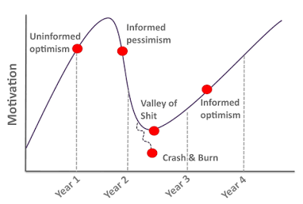

After four years, the day finally came. The night before, I could barely sleep. I kept imagining what the moment would feel like, replaying it over and over in my head.
And then it happened. Surprisingly, when the moment finally arrived, I felt... calm. I had planned to wear a suit jacket, only to realize none of them fit anymore. A year of lifting weights definitely wasn't for nothing.
To be honest, I never really liked my PhD topic. Formal methods have never been something I was particularly passionate about. I find them difficult to generalize, and I don't think they have as much direct impact on the real world as I'd like. At least in software engineering, I've always felt that formal methods are somewhat of a niche field within the European research community.
That said, I'm genuinely happy that I made it through these four years. More than anything else, my PhD taught me how to keep going when things seem impossible. For the first three years, I honestly didn't believe I would finish. I went through the entire classic PhD emotional roller coaster and hit the Valley of Shit right on schedule in the summer of 2024. On top of that, I wasn't excited about my research topic, and my supervisor wasn't supportive of me moving toward deep learning, which made that period particularly difficult.

It wasn't until March 2025 that I finally saw a way forward. From then on, I became ruthless about eliminating low-return activities, including most group meetings. Spending an hour in a meeting when only two or three minutes were actually relevant to my work simply didn't make sense anymore. Looking back, I feel that one reason engineering PhDs in Germany often take 5 to 8 years is that a surprising amount of time gets consumed by activities with very little payoff.
One thing this journey did give me was a deep understanding of the Modelica ecosystem. And over time, I've become convinced that if you're not working on frontier foundation models themselves, then combining deep learning with a domain you truly understand is an incredibly valuable direction to pursue. Looking back now, I'm genuinely glad I had the opportunity to develop that expertise.
Finally, seeing so many people come to my defense meant a lot to me. Thank you all for your support. It truly made the day special.